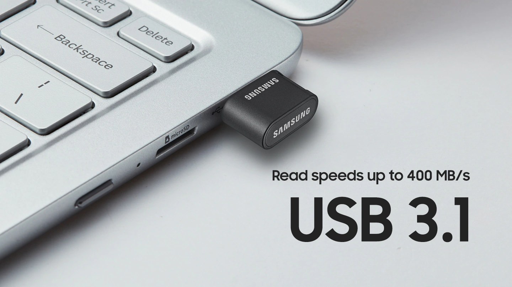
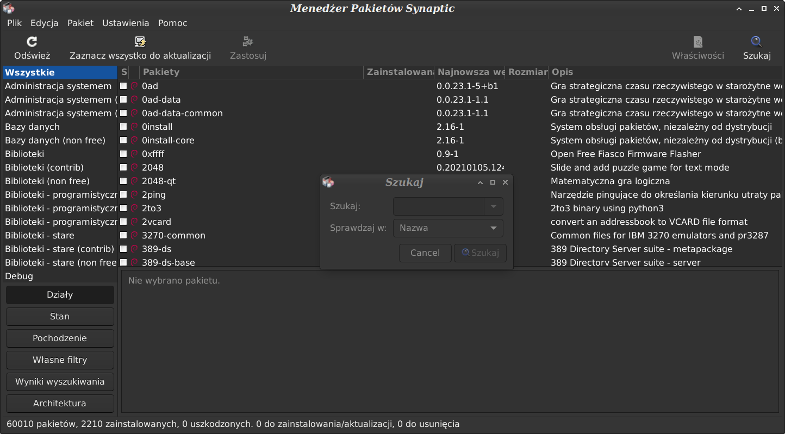

Uniwersalny
Osobisty System Operacyjny
Debian 11 Live USB

To system zaszyfrowany, 🗝️ który startuje z dysku USB
z zapisem danych
na wszystkich komputerach z procesorem
Intel lub AMD.
Systemu nie można uruchomić ani odczytać dysku z innego systemu
bez znajomości hasła.
Jest to zabezpieczenie na wypadek kradzieży lub zguby.
Wejście do systemu
BIOS-UEFI:
1. Windows 10 z okna logowania
jeśli nie posiadamy konta
naciśnij klawisz Shift i trzymaj,
myszką wywołaj
program "Uruchom ponownie",
trzymaj wciśnięty klawisz Shift, system Windows rozpocznie
procedurę restartu z wejściem do BIOS'u UEFI,
jeśli taki masz
zobacz film...
📽️
2. Wejście do oprogramowania UEFI
z terminala
jako administrator wykonaj polecenie:
shutdown /r /fw /t 0
zobacz film...
📽️
3. Po włączeniu komputera
naciskaj odpowiedni klawisz
Del, F2, F8 ,F12, Enter - zależne od producenta sprzętu.
zobacz film...
📽️
Naszym zadaniem jest
poinformowanie naszego biosa, aby w pierwszej kolejności sprawdzał porty USB,
a następnie
dyski wewnętrzne komputera.
Takie ustawienie daje nam komfort niebawienia się klawiszem
[np.F12 - boot menu] przy starcie systemu.
Teraz jeśli włożymy nasz Debian-Live-USB do portu USB i włączymy zasilanie,
BIOS załaduje system z pendrive'a, jeśli tam nic nie znajdzie, to załaduje system, jaki posiadamy na dysku komputera.
To cała filozofia botowania w skrócie.
Debian Live
Osobisty System Operacyjny
Debian Live nie wymaga do działania niezwykle potężnego systemu.
Komputer 💻️ nie musi posiadać dysku stałego.
System jest instalowany z portu USB-2 lub USB-3.
(polecany USB-3, przeważnie to ten z niebieskim paskiem)
Minimalne wymagania to 1GB RAM, procesor Intel lub AMD.
(chociaż posiadanie lepszego sprzętu jest bardziej komfortowe)
Automatycznie montuje dyski na pulpit (read/write).
Standardowo system został skonfigurowany do pracy:
Internet, Office, media.
w tym między innymi skonfigurowano:
Dzięki VM Virtual
Machine możemy korzystać
z innych systemów operacyjnych
np. Windows 10
Który może być włączony w Internet lub nie.
Sterowanie i kopiowanie danych z naszego telefonu za pomocą myszki.
Przydatne jeśli masz uszkodzony panel dotykowy.
Intensywnie pracujesz.
Jeśli mamy taką potrzebę, instalację systemu
możemy dokonać
na dysk stały komputera
za pomocą programu Calamares.
Graficzny instalator programów dla początkujących.
- jeśli nie znamy nazw aplikacji -
Instalator pakietów Synaptic.
- tutaj zobaczymy co się dzieje w czasie instalacji -

Poradnik techniczny ...
Serwer 🅳🅻🅽🅰
youtube-dl
został zainstalowany i skonfigurowany co umożliwia odtwarzanie plików multimedialnych z naszej pamieci-flash-pendrive np. w smart TV.
Konfigurację serwera DLNA połączono z programem youtube-dl to mały program wiersza poleceń do pobierania filmów z YouTube innych witryn.
dla wygody utworzono link yy -> /usr/bin/youtube-dl
Kilka przydatnych poleceń:
-- lista plików formatów możliwa do pobrania
youtube-dl -f 18 https://youtu.be/f4Mc-NYPHaQ
-- pobiera plik nr.18 np. format mp4.
youtube-dl https://youtu.be/f4Mc-NYPHaQ
-- domyśnie pobiera najlepszą jakość.
Nasz ulubiony teledysk jest automatycznie zapisany do katalogu serwera DLNA i możemy się nim cieszyć
na dużym ekranie naszego smart 📺️ TV.
Pobranie linku z YouTube kliknij na [ UDOSTĘPNIJ ] -> kopiuj -> wklej w terminalu.
Smaki systemów LINUX.
Debian
( Uniwersalny )
to system w którym
możemy osiągnąć wszystko to
co jest w pozostałych trzech
w zależności od potrzeb.
Mint
( Biuro/Media )
dla komputerów stacjonarnych i laptopów, jest w pełni wyposażony w aplikacje, których większość ludzi potrzebuje.
Ubuntu Studio
( multimedia )
system operacyjny dla osób zajmujących się produkcją audio, produkcją wideo,
projektowaniem graficznym, fotografią i DTP.
Kali
( 😻 👽️ 🤖️ 👨🏫️ 🕵♀️️ 🧙♂️️ )
dla pasjonatów i specjalistów od spraw bezpieczeństwa.
Zbiór oprogramowania do penetracji cyberprzestrzeni.